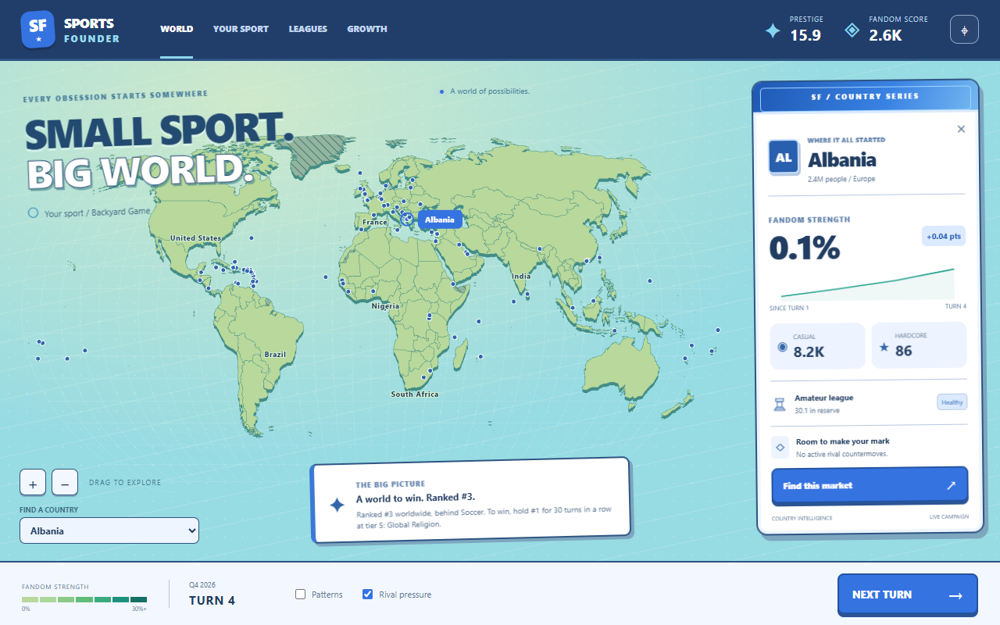

THE MAKING OF SPORTS FOUNDER
Development fieldbook.

THE JOURNEY
Where we are in the build
Phases describe milestones, not a release-date forecast.
DESIGN → IMPLEMENTATION
Open the design contract ↗The system roadmap
Every card opens a concrete checklist, the next step, dependencies and source documents. Bars count the listed deliverables equally; they do not estimate effort or overall game completion.
No systems match these filters.
Try another feature name or show the full roadmap. A system is Built only when its entire listed checklist is complete.
THE NEXT CHAPTER
Recommended order · not a scheduled commitmentNext on the field
NEXT PLAYABLE MILESTONE
Next playable milestone
Keep an eye on these
Historical findings to recheck as the game changesPROGRESS, WITH RECEIPTS
Read the detailed October 2 review ↗